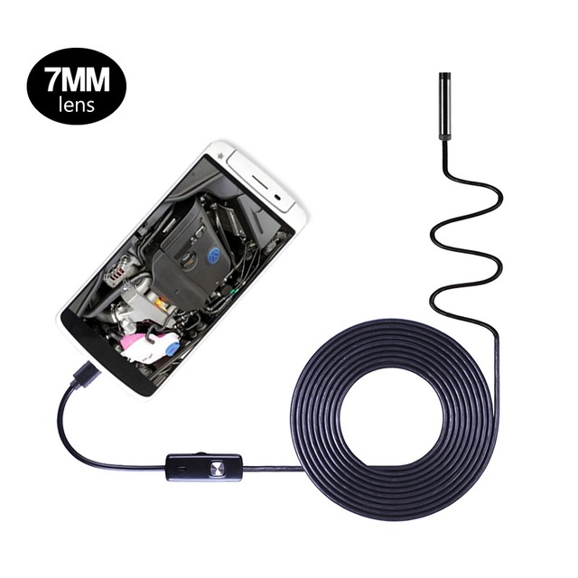

River Bed Cleaner
I suggest you change your abstract to suit that of a river bed cleaner and not just of an underwater drone.
Underwater drone are remote control underwater robots that driven by an individ- ual on the surface. These robots are tethered by a series of wires. All Underwater drones are equipped with a video camera, propulsion system and lights. The device is equipped with a video camera, propulsion system and lights. Other equipment is added depending on the specification required.
Underwater Drones, provides innovation and opens new market. It can be used to inspect critical infrastructures like dams, bridges,underwater pipelines were divers could not reach. It can be also used in rescue operations. That is if a person falls down in a reservoir we can use this device in the entire area to find out the person.
Work to be done
Currently we have implemented an underwater drone. What is left to be done is including a robotic arm which can then be used in river bed cleaning by picking and placing items. If time permits, sensors like gyroscope, depth sensors can also be used for the same.
Design
ROV Structure
The structure dives through the water using its frame and propulsion system. There are many factors that needed to be considered while designing the frame and propulsion system.
ROV Frame
It is the skeleton of the underwater drone that we have designed. It supports the propulsion system and the ballast. It is a cuboidal structure. Frame is usually an open, box-shaped structure. Holes are included in the frame so that air trapped can escape.
Materials Used
Different materials like PVC and aluminium were available. As PVC materials were easy accessible, cost effective, require less tools for opera- 8tion we prefer PVC over other materials. A better PVC known as uPVC were considered as it was having better mechanical strength and less plasticity.
Dimensional Stability
The frame used is a cuboidal structure which is symmetric about x and y axis. It helps to maintain the stability of the system when different forces act from different motors.
Shapes Used
The shapes of the motor, frame(pipe), ballast, propulsion motor are of cylindrical shape. The cylindrical shape helps in distributing hydraulic pressure uniformly around surfaces.
Structural Stability
For stability of the structure we use weights and float. Float are placed at top of the frame as it provides positive buoyancy(poitive buoyancy is the property of a material to float in water) and weights are placed at the bottom of the frame as it provides negative buoyancy(negative buoyancy is the property of the material to sink in water), therefore to maintain stability of the device we use the property of neutral buoyancy. Weights are placed such a way by subtracting the whole weight of the system.
After considering these factors, we selected the components used for designing the frame:-
uPVC (unplasticized PolyVinyl Chloride)

uPVC is a thermoplastic material derived from common salt and fossil fuels. The pipe material has the longest track record of all plastic materials. The first uPVC pipes weremade in the 1930s. Beginning in the 1950s, uPVC pipes were used to replace corroded metal pipes and thus bring fresh drinking water to a growing rural and later urban population. uPVC pipes are certified safe for drinking water per NSF Standard 61 and used extensively for water distribution and transmission pipelines throughout North America and around the world. uPVC is allowed for waste lines in homes and is the most often used pipe for sanitary sewers.
Further pressure and non-pressure applications in the field of sewers, soil and waste, gas(low pressure) and cable protection soon followed. The material’s con- tribution to public health, hygiene and well-being has therefore been significant.
uPVC has high chemical resistance across its operating temperature range, with a broad band of operating pressures. Max operating temperature is reported at 140 degree farenheit, and max working pressure: 450 PSI. Due to its long- term strength characteristics, high stiffness and cost effectiveness, uPVC systems account for a large proportion of plastic piping installations and some estimations put it that greater than two million miles of uPVC pipe are currently in service across applications.
Weight

Weights are mainly used to control the vehicle without flipping. While considering about weights we need to consider about three concepts which will be mentioned below.
Center of Buoyancy
The center of buoyancy(CB) is located at the geometric center of the portion of the vessel that is underwater. The buoyant force acts upward through this point. The center of gravity(CG) is located at the point where all the effects of gravity acting on the vessel appear to concentrate. Total vessel weight act downward through the CG.
Float

Floatation is used to balance the sinking tendency of the other parts(which are heavy) and thus it allows ROV to float effortlessly in mid-water. It conserves the power that would otherwise be needed to lift the ROV.
Propulsion System

The key factors to be considered in any propulsion system are: Number of thrusters,Location of thrusters,Thrust (force) produced. The propulsion system directly depends on the power supply. All underwater robots use electrical energy. Power distribution system is used to channel the energy to various components that need it. The thrusters are motorized propellers used to generate the forces to propel the vehicle through the water. The proposed frame has a square shape in which each of the propellers is placed in the 4 corners and one is placed at the centre at the top. The main component of the propulsion system is a motor used is bilge pump used along with a propeller.
In our design we have used the most often applied configuration - 5 thrusters propulsion system. It allows us to divide the propulsion system into two indepen- dent subsystems responsible for movements in the planes(horizontal and vertical).
Motor - Bilge Pump

The bilge pumps together with propellers are used for propulsion. A bilge pump is a water pump used to remove bilge water from boats. It mainly works in 12v battery and it is already waterproofed. It is a non-automatic 1100GPH bilge pumps which offer water evacuation activated by a panel. It includes Anti-Airlock protection and exclusive moisture tight seals and marine grade wiring. It works in Marine water upto 20ft depth. It’s also suitable for pond water pumping, water research, solar water system etc.
Power Source
A single motor used in the system uses 5 to 6 amps of current, so current output of 30 amps is required for proper functioning of the motors. For this purpose we use a lithium ion car batteries which provide a peak current of 23ApH. The car batteries are affordable. But these cant be used if you need the power source within the ROV.
Control Box
The control box helps the observer to control the rov which has been launched into underwater. The main components which were used to build the control box was:-
- Microcontroller
- Relay
- Joystick
Microcontroller
The microcontroller used is Arduino Uno. It is an open source microcontroller board based on the Microchip ATmega328P microcontroller and developed by arduino cc. The board is equipped with sets of digital and analog input/output pins that may be interfaced to various expansion boards and other circuits. The board has 14 Digital pins,6 analog pins , and programmable with the Arduino IDE via a USB cable. It accepts voltages between 7 and 20 volts.
Relay

A relay is an electrically operated switch. They use electromagnet to mechanically operate a switch. In our control box we use relay for bidirectional control of our driving motors, for this we use 5V two channel relay.
Joystick
The arduino joystick is similar to two potentiometers connected together , one for vertical movement (y axis) and for horizontal movement (x axis). In our project we use two joysticks. one for vertical movement along z plane and another one for x and y axis movement in horizontal plane.
Implementation
The construction of the underwater drone was done in the following six phases:-
Phase I
Initially we started by building the frame. We used pvc pipes for initial structure building, as pvc was easy to cut and fix by ourselves it was used for all the trial build of frame. We had built many frame structures and after their trials in water we modified the structure as required.
Then we came to realize that the PVC we used wasn’t strong enough. It was not able to withstand the weight of our motor, float or even the lead weights. Thus we started looking for a better frame material. Unplasticized Polyvinyl Chloride (uPVC) was chosen then as it was having a high strength to weight ratio. uPVC pipes were having less plasticity hence was less flexible giving us high strength. uPVC also has many advantages like good impact resistance, high strength, doesnt corrode, has all weather UV resistance etc..
The frame we build should also must be symmetric. The reason it should be symmetric is that it will greatly effect the stability of the system when other com- ponents like floats, weights, pumps are attached to the frame. Thus a symmetric structure was designed with a length and breadth of 30 cm. Height was fixed to 20 cm.Pipes were provided with holes to avoid air trapping inside the pipes which will greatly affect the neutral buoyancy of the system when it is submerged hence stability will be lost. A single air bubble trapped inside could spoil the entire stability of the system. Joining of the uPVC pipes were done using nuts and bolts of 1/2 inch size as it will help us to repair the frame when needed.
Phase II
After the frame was build, next the floats and weights were placed. The proce- dure followed was as follows: Initially the floats where fixed above the frame using clamps. Here we used two floats at two ends of the structure at equal distance. Secondly, we added the motors to four pillars of the frame and fixed the vertical thruster, next we placed the frame in water, now the structure which was slightly floating was provided with lead weights until neutral buoyancy was achieved, the corresponding lead weights where then fixed on the frame. The principle of keep- ing positive buoyant materials on upper half of the structure and negative buoyant on the lower half is followed as it will help the system not to flip under the water under certain circumstances. The final structure was then immersed in the water and forces were given along different directions to check whether the system is stable or not.
The principle of keeping positive buoyant materials on upper half of the struc- ture and negative buoyant on the lower half is followed as it will help the system not to flip under the water under certain circumstances.The final structure was then immersed in the water and forces were given along different directions to check whether the system is stable or not.
Phase III
Here the building of propulsion motors from bilge pump is explained. The motor shaft is made to expose out of the frame by removing the ABS covering of the pump. Next the impeller is removed for fixing the custom made propeller.
Propeller is made by 3D printing. Different designs were used and tested. We used Fusion360, a software for designing.

Phase IV
The next phase we came across was the arrangement of the propulsion system. We used four motors for horizontal movement along x-axis and y-axis, and a single motor for vertical movement. The arrangement of four horizontal thrusters make sure that equal weight is distributed along all corners of the frame and the vertical thruster must be placed at the centre of the horizontal plane at the point where the diagonals intersect. The vertical thruster is placed in such a height that propeller alone stands above floats. The horizontal propellers where then placed along each corners as shown as in the figure. Anticlockwise and clockwise direction of each motors with different sequence is performed to achieve foreword, backward, left, and right directions of motion. The forward motion of the system is achieved by rotating all horizontal motors on similar direction. The movement to the right is achieved by paired rotation of diagonally opposite thrusters along zero-th and third sub planes.
Phase V
Here we discuss the tethering,designing of control box and fixing of camera in the system the tethering cable used is copper wire which was used to extent the motor wires. Now the wire connections are done in the control box as shown in the figure
The camera used in the ROV is an endoscopy camera. The camera was chosen as it was already waterproofed and can directly be connected to smartphones via cable. It provides a smart vision to record video and audio which can be directly stored to your Android phone. It is convenient for observation and follow-up analysis. It has a light button used to control 6 LED lights to work in dark areas. It’s a IP67 waterproof camera with micro to USB line, also works with computer. It is an ideal solution for underwater camera.

| Direction | M1 | M2 | M3 | M4 | M5 |
| Forward | 01 | 01 | 01 | 01 | x |
| Backward | 10 | 10 | 10 | 10 | x |
| Right | 10 | 01 | 01 | 10 | x |
| Left | 01 | 10 | 10 | 01 | x |
| Up | x | x | x | x | 01 |
| Down | x | x | x | x | 10 |
Phase VI
The section discusses about wiring connection of tether. The wire provided by the bilge pumps were marine graded and only have 1.5m. The remaining length was achieved using copper wires which where used for commercial wiring. The challenge we faced here was the sealing of joining of two wires in underwater. M- seal, super glue all failed and the sealing was at-last achieved using plastic tubescovering the wire bond with epoxy resin sealing both the sides along with shrinking tubes.


Results
| Operational Depth | 5m |
| Collapse Depth | Unknown |
| Operating Environments | Freshwater, Saltwater, Pool, Slow River |
| Dimension of Frame | 30*30 cm |
| Height of the Frame | 20cm |
| Float Dimension | Length:30cm, Diameter:2.5 inch |
After all the phases above mentioned were compiled together for the formation of our ROV. Our ROV was tested in a water tank, using the control box. All the forward, Backward, Left, Right directions of motions were achieved. The main challenge we faced was to push the Rov into the depths and pull the Rov out to the water surface. As the vertical motions were controlled by a single motor, achieving balance was a challenge. After many trails and fails we have achieved balances. Next its the neutral buoyancy which played an important limitation to the tests. We came to understand after several trails that the neutral buoyancy always changes, as the volume of the water body where changing. Thus weight balancing where needed according to the water body we were testing. It’s the propeller which made the next challenge. As the propellers were designed by ourselves, and due to the lack of quality of 3D printing material change in the inner radius of motor shaft were observed after several trails. Here the Dshaft of the designed propeller decayed to round shape which made it to slip away from the motor shaft during the trails. Later we made the propellers with a better material and applied epoxy resin before it’s fixing. Thus the expansion was reduced and propeller lasted longer. The endoscopy camera which we were using provided us with a good quality of vision more than we expected. But the limitation was provided by the length of wire it provided. As these wire were professionally installed, we couldn’t extend it.
Future Scope
Current system has a control system with all components on the land, an alternation include where the motion controllers alone are put on the land, and other components inside the system with a waterproof sealing. But this also require an extra expense on the tight casing which is a hard task. The motor used can be upgraded from brushed motors to brush less motors which will provide high power. An update on the frame material from uPVC to aluminium frame is also recommended. An important update which can be included is replacement of relay with motor drivers. In our project we use 24 relays instead of motor drivers as they were very expensive.
Conclusion
I suggest you change this conclusion to something more simple, smaller and understandable
ROVs are unoccupied, usually highly manoeuvrable, and operated by a crew either aboard a vessel/floating platform or on proximate land. They are common in deepwater industries such as offshore hydrocarbon extraction. They are linked to a host ship by a neutrally buoyant tether or, often when working in rough conditions or in deeper water, a load-carrying umbilical cable is used along with a tether management system (TMS). The TMS is either a garage-like device which contains the ROV during lowering through the splash zone or, on larger work- class ROVs, a separate assembly which sits on top of the ROV. The purpose of the TMS is to lengthen and shorten the tether so the effect of cable drag where there are underwater currents is minimized. The umbilical cable is an armored cable that contains a group of electrical conductors and fiber optics that carry electric power, video, and data signals between the operator and the TMS. Where used, the TMS then relays the signals and power for the ROV down the tether cable. Once at the ROV, the electric power is distributed between the components of the ROV. However, in high-power applications, most of the electric power drives a high-power electric motor which drives a hydraulic pump. The pump is then used for propulsion and to power equipment such as torque tools and manipulator arms where electric motors would be too difficult to implement subsea. Most ROVs are equipped with at least a video camera and lights. Additional equipment is commonly added to expand the vehicle’s capabilities. These may include sonar’s, magnetometers, a still camera, a manipulator or cutting arm, water samplers, and instruments that measure water clarity, water temperature, water density, sound velocity, light penetration, and temperature. Also optical-stereo cameras have been mounted on ROVs in order to improve the pilots’ perception of the underwater scenario.
References
- Steven W Moore , Harry Bohm and Vickie Jensen,(2010), “Underwater Robotics Science, Design and Fabrication”, Marine Advanced Technology Edu (1705))
- The Design and development of a Remotely Operated Underwater Vehicle (IEEE Xplore)
- Designing of ROV mechanism
- Electrical and Sensor Design
- Remotely Operated Underwater Vehicle (Senior design project from FLORIDA INTERNATIONAL UNIVERSITY by Gabriel Martos, Ashley Abreu and Sahivy Gonzalez)
- Buoyancy (Alexandria University - MIA)
- Design phases and process(2018 MATE ROV COMPETITION ,Columbia Institute of Technology Vancouver, Canada )
- “EyeROV (IROV TECHNOLOGIES PRIVATE LIMITED)”, https: //eyerov.com.